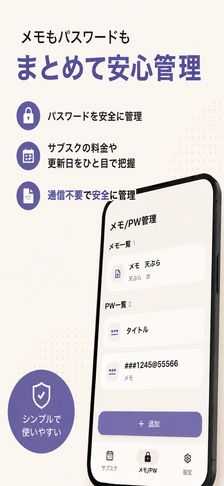
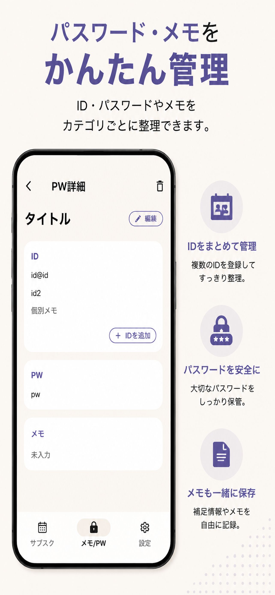
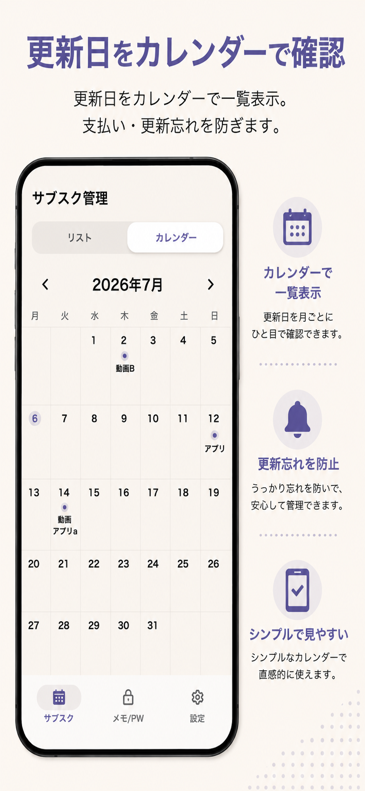
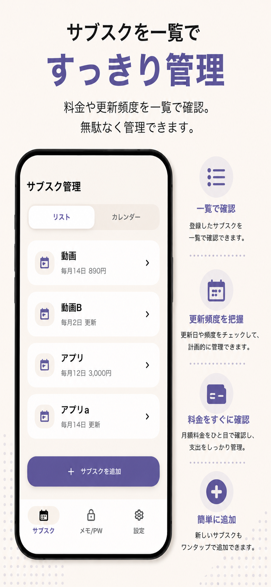

Memo / Subscription
local memo
サブスク管理と重要メモ（ID,パスワード）を、クラウドに預けずシンプルに。
更新日や料金をカレンダーで確認しながら、ID・パスワード・補足メモも必要な範囲で整理できます。 PW管理は初期状態ではオフ。必要な人だけ、設定から内容を確認して有効にできます。
- サブスクの料金や更新日を管理
- カレンダーで更新日を確認
- メモやIDをカテゴリごとに整理
- 必要な場合だけPW管理をオン



